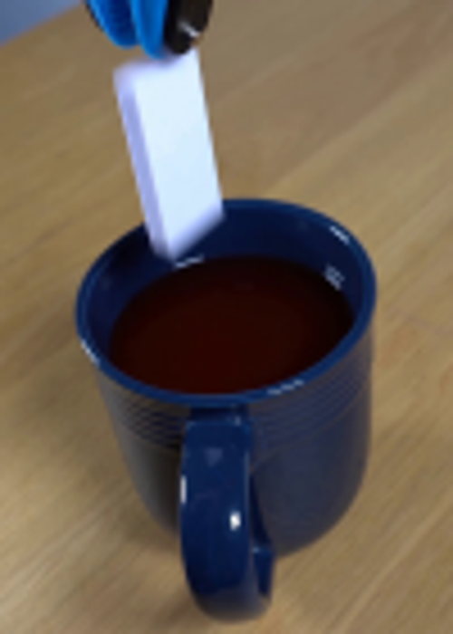
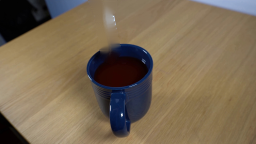
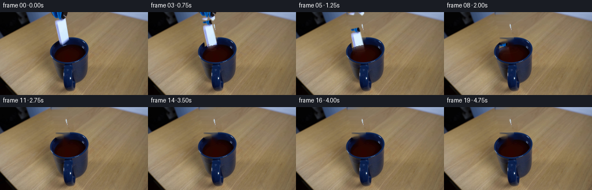
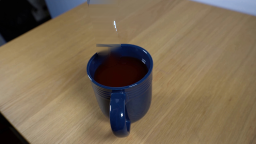

CODING AGENTS AS PIXEL WORLD MODELS
traex/GPT-5.6-Sol · 0048
点击播放 · 原生 RGB 像素
逐轮保存的候选
回放视频、检查图与代码变化。
每份候选均可单独播放。实际图片检查记录在下方工具轨迹中。
候选 01播放与检查图
点击播放 · 原生 RGB 像素

展开代码变化
--- 上一保存版本
+++ 本次保存版本
@@ -0,0 +1,173 @@
+from pathlib import Path
+import cv2
+import numpy as np
+from PIL import Image
+import artifact_io
+
+CASE_DIR = Path(__file__).resolve().parent
+N, H, W = 20, 144, 256
+
+
+def soft_polygon(points, blur=0.65):
+ """Antialiased-ish object matte at the native output resolution."""
+ m = np.zeros((H, W), np.uint8)
+ cv2.fillPoly(m, [np.asarray(points, np.int32)], 255, lineType=cv2.LINE_AA)
+ if blur:
+ m = cv2.GaussianBlur(m, (0, 0), blur)
+ return m.astype(np.float32) / 255.0
+
+
+def composite(dst, src, alpha):
+ a = np.clip(alpha, 0.0, 1.0)[..., None]
+ return dst * (1.0 - a) + src * a
+
+
+def shifted(arr, dx, dy, interpolation=cv2.INTER_LINEAR):
+ mat = np.float32([[1, 0, dx], [0, 1, dy]])
+ return cv2.warpAffine(arr, mat, (W, H), flags=interpolation,
+ borderMode=cv2.BORDER_CONSTANT, borderValue=0)
+
+
+def make_clean_plate(original):
+ # The moving pieces occupy a very small part of an otherwise locked shot.
+ # Inpaint them from the immediately adjacent wood, rim, and liquid.
+ remove = np.zeros((H, W), np.uint8)
+ cv2.fillPoly(remove, [np.array([
+ [88, 0], [116, 0], [117, 14], [111, 21], [121, 52],
+ [116, 62], [108, 65], [100, 61], [94, 25], [91, 15]
+ ], np.int32)], 255)
+ remove = cv2.dilate(remove, np.ones((3, 3), np.uint8), iterations=1)
+ clean = cv2.inpaint(original.astype(np.uint8), remove, 4, cv2.INPAINT_TELEA)
+
+ # Telea can leave a bright vertical thread near a mask that meets an image
+ # edge. Replace only the upper wood portion with horizontally interpolated
+ # wood texture, while preserving soft inpainted boundaries.
+ upper = (remove > 0) & (np.indices((H, W))[0] < 47)
+ texture = clean.copy().astype(np.float32)
+ for y in range(47):
+ xs = np.flatnonzero(upper[y])
+ if not len(xs):
+ continue
+ lo, hi = int(xs.min()), int(xs.max())
+ left = original[y, max(0, lo - 7)].astype(np.float32)
+ right = original[y, min(W - 1, hi + 9)].astype(np.float32)
+ for x in range(lo, hi + 1):
+ q = (x - lo + 1) / (hi - lo + 2)
+ # Blend endpoints plus nearby unmasked texture to retain grain.
+ base = left * (1-q) + right * q
+ donor = original[y, min(W - 1, x + 27)].astype(np.float32)
+ texture[y, x] = base * 0.72 + donor * 0.28
+ edge_alpha = cv2.GaussianBlur((upper.astype(np.uint8) * 255), (0, 0), 1.1).astype(np.float32)/255
+ clean = composite(clean.astype(np.float32), texture, edge_alpha)
+ return np.clip(clean, 0, 255).astype(np.float32)
+
+
+def liquid_surface_y(x):
+ # Back-to-front projected liquid plane inside the mug.
+ return 56.5 + 0.0105 * (x - 119.0) ** 2
+
+
+def draw_ripples(frame, age):
+ """Subtle perspective-correct rings, strictly clipped to the liquid."""
+ liquid = np.zeros((H, W), np.uint8)
+ cv2.ellipse(liquid, (119, 71), (29, 19), 0, 0, 360, 255, -1, cv2.LINE_AA)
+ ink = np.zeros((H, W, 3), np.uint8)
+ matte = np.zeros((H, W), np.uint8)
+ rx = int(4 + 2.15 * age)
+ ry = max(1, int(1.5 + 0.65 * age))
+ center = (109 + min(age // 5, 2), 64 + min(age // 7, 2))
+ cv2.ellipse(matte, center, (rx, ry), 0, 0, 360, 210, 1, cv2.LINE_AA)
+ if age >= 3:
+ cv2.ellipse(matte, center, (max(2, rx-5), max(1, ry-2)), 0, 185, 355,
+ 125, 1, cv2.LINE_AA)
+ matte = cv2.bitwise_and(matte, liquid)
+ strength = max(0.0, 1.0 - age / 12.0)
+ # A muted copper highlight is more plausible than a bright graphic ring.
+ ink[:] = (102, 54, 35)
+ return composite(frame, ink.astype(np.float32), matte.astype(np.float32)/255 * 0.25 * strength)
+
+
+def main():
+ rgb = np.asarray(Image.open(CASE_DIR / "first_frame.png").convert("RGB"), dtype=np.uint8)
+ # OpenCV operations below use RGB arrays; channel order is irrelevant to
+ # inpainting and all explicitly supplied colors are RGB.
+ original = rgb.astype(np.float32)
+ clean = make_clean_plate(rgb)
+
+ # Source mattes split the ceramic domino and the two jaws of the grabber.
+ domino_a = soft_polygon([(95, 8), (108, 5), (120, 50), (115, 61),
+ (108, 65), (100, 60), (94, 18)])
+ left_a = soft_polygon([(88, 0), (103, 0), (106, 8), (103, 17),
+ (96, 16), (91, 10)])
+ right_a = soft_polygon([(102, 0), (117, 0), (116, 11), (110, 18),
+ (104, 13)])
+
+ yy, xx = np.indices((H, W), dtype=np.float32)
+ frames = [rgb.copy()] # Contract: frame zero remains byte-for-byte exact.
+
+ # Quarter-second samples of a release, free fall, and sinking. The grabber
+ # opens as it retreats upward; the domino accelerates before drag hides it.
+ domino_drop = [1, 4, 9, 15, 22, 30, 39, 49, 60, 72, 84, 96,
+ 108, 120, 132, 144, 156, 168, 180]
+ for fi in range(1, N):
+ frame = clean.copy()
+ dy = domino_drop[fi-1]
+
+ # Moving ceramic. Slight horizontal drift follows the disturbed liquid.
+ dx = 0 if fi < 5 else min(3, (fi-3)//3)
+ dsrc = shifted(original, dx, dy)
+ da = shifted(domino_a, dx, dy)
+
+ # Liquid occlusion: full visibility above the surface, rapidly fading
+ # and taking on the dark tea color beneath it.
+ sy = liquid_surface_y(xx)
+ depth = yy - sy
+ submerged = depth > 0
+ visibility = np.ones((H, W), np.float32)
+ visibility[submerged] = 0.46 * np.exp(-depth[submerged] / 7.0)
+ da_visible = da * visibility
+ tinted = dsrc.copy()
+ tea = np.empty_like(tinted)
+ tea[:] = (75, 28, 18)
+ tint_amt = np.clip(depth / 15.0, 0, 0.62)[..., None]
+ tinted = tinted * (1-tint_amt) + tea * tint_amt
+ frame = composite(frame, tinted, da_visible)
+
+ # The source tool stays closed for the first beat, then its jaws part
+ # by a few pixels while moving out through the top of frame.
+ if fi <= 6:
+ if fi == 1:
+ rise, opening = 0, 0
+ else:
+ rise = [0, 1, 4, 8, 13, 19][fi-1]
+ opening = [0, 1, 2, 3, 4, 5][fi-1]
+ for alpha, side in ((left_a, -1), (right_a, 1)):
+ ox = side * opening
+ src = shifted(original, ox, -rise)
+ a = shifted(alpha, ox, -rise)
+ frame = composite(frame, src, a)
+
+ # Surface response begins on impact and damps away naturally.
+ if 2 <= fi <= 13:
+ age = fi - 1
+ frame = draw_ripples(frame, age)
+ # Tiny low splash at impact; no exaggerated new object is introduced.
+ if fi in (2, 3, 4):
+ splash = np.zeros((H, W), np.uint8)
+ lift = fi - 2
+ cv2.circle(splash, (105-lift, 59-lift*2), max(1, 2-lift//2),
+ 150, -1, cv2.LINE_AA)
+ cv2.circle(splash, (113+lift, 60-lift), 1, 110, -1, cv2.LINE_AA)
+ color = np.zeros((H, W, 3), np.float32); color[:] = (83, 36, 23)
+ frame = composite(frame, color, splash.astype(np.float32)/255 * 0.42)
+
+ frames.append(np.clip(frame, 0, 255).astype(np.uint8))
+
+ frames = np.stack(frames, axis=0)
+ assert frames.shape == (20, 144, 256, 3) and frames.dtype == np.uint8
+ assert np.array_equal(frames[0], rgb)
+ artifact_io.save(frames, CASE_DIR)
+
+
+if __name__ == "__main__":
+ main()
候选 02播放与检查图
点击播放 · 原生 RGB 像素

展开代码变化
--- 上一保存版本
+++ 本次保存版本
@@ -33,8 +33,8 @@
# Inpaint them from the immediately adjacent wood, rim, and liquid.
remove = np.zeros((H, W), np.uint8)
cv2.fillPoly(remove, [np.array([
- [88, 0], [116, 0], [117, 14], [111, 21], [121, 52],
- [116, 62], [108, 65], [100, 61], [94, 25], [91, 15]
+ [88, 0], [118, 0], [120, 15], [116, 23], [123, 52],
+ [118, 63], [108, 66], [99, 62], [93, 20], [91, 14]
], np.int32)], 255)
remove = cv2.dilate(remove, np.ones((3, 3), np.uint8), iterations=1)
clean = cv2.inpaint(original.astype(np.uint8), remove, 4, cv2.INPAINT_TELEA)
候选 03播放与检查图
可观测工具轨迹
实际执行的命令与返回图片。
命令 1exit 0
/bin/bash -lc "cat GENERATION_RULES.md && printf '\\n---PROMPT---\\n' && cat prompt.txt"
命令 2exit 1
/bin/bash -lc "find . -maxdepth 2 -type f -printf '%p\\n' | sort && printf '\\n---TOOLS---\\n' && command -v ffmpeg && command -v python3"
命令 3exit 0
/bin/bash -lc "sed -n '1,240p' artifact_io.py"
命令 4exit 0
/bin/bash -lc "python3 - <<'PY'
from PIL import Image
im=Image.open('first_frame.png')
print(im.mode, im.size)
PY"命令 5exit 0
/bin/bash -lc "python3 - <<'PY' mods=['cv2','numpy','scipy','skimage'] for m in mods: try: x=__import__(m); print(m,'ok',getattr(x,'__version__','')) except Exception as e: print(m,'NO',e) PY"
命令 6exit 0
/bin/bash -lc "python3 - <<'PY'
from PIL import Image
im=Image.open('first_frame.png')
im.crop((70,0,170,140)).resize((500,700)).save('.tmp/crop.png')
PY"命令 7exit 0
/bin/bash -lc "cat > .tmp/test_inpaint.py <<'PY'
import cv2, numpy as np
from PIL import Image
im=cv2.imread('first_frame.png')
mask=np.zeros(im.shape[:2],np.uint8)
# tool
a=np.array([[89,0],[115,0],[115,10],[109,17],[99,17],[94,11]],np.int32); cv2.fillPoly(mask,[a],255)
# domino
p=np.array([[97,10],[109,7],[120,52],[111,62],[102,59],[96,17]],np.int32); cv2.fillPoly(mask,[p],255)
mask=cv2.dilate(mask,np.ones((3,3),np.uint8))
out=cv2.inpaint(im,mask,5,cv2.INPAINT_TELEA)
cv2.imwrite('.tmp/inpaint.png',out)
cv2.imwrite('.tmp/mask.png',mask)
PY
python3 .tmp/test_inpaint.py"命令 8exit 0
/bin/bash -lc "python3 - <<'PY'
import cv2,numpy as np
im=cv2.imread('first_frame.png'); m=cv2.imread('.tmp/mask.png',0)
for meth,n in [(cv2.INPAINT_NS,'ns'),(cv2.INPAINT_TELEA,'tel')]:
for r in [2,3,7]: cv2.imwrite(f'.tmp/{n}{r}.png',cv2.inpaint(im,m,r,meth))
PY"命令 9exit 0
/bin/bash -lc "cat > generate.py <<'PY'
from pathlib import Path
import cv2
import numpy as np
from PIL import Image
import artifact_io
CASE_DIR = Path(__file__).resolve().parent
N, H, W = 20, 144, 256
def soft_polygon(points, blur=0.65):
\"\"\"Antialiased-ish object matte at the native output resolution.\"\"\"
m = np.zeros((H, W), np.uint8)
cv2.fillPoly(m, [np.asarray(points, np.int32)], 255, lineType=cv2.LINE_AA)
if blur:
m = cv2.GaussianBlur(m, (0, 0), blur)
return m.astype(np.float32) / 255.0
def composite(dst, src, alpha):
a = np.clip(alpha, 0.0, 1.0)[..., None]
return dst * (1.0 - a) + src * a
def shifted(arr, dx, dy, interpolation=cv2.INTER_LINEAR):
mat = np.float32([[1, 0, dx], [0, 1, dy]])
return cv2.warpAffine(arr, mat, (W, H), flags=interpolation,
borderMode=cv2.BORDER_CONSTANT, borderValue=0)
def make_clean_plate(original):
# The moving pieces occupy a very small part of an otherwise locked shot.
# Inpaint them from the immediately adjacent wood, rim, and liquid.
remove = np.zeros((H, W), np.uint8)
cv2.fillPoly(remove, [np.array([
[88, 0], [116, 0], [117, 14], [111, 21], [121, 52],
[116, 62], [108, 65], [100, 61], [94, 25], [91, 15]
], np.int32)], 255)
remove = cv2.dilate(remove, np.ones((3, 3), np.uint8), iterations=1)
clean = cv2.inpaint(original.astype(np.uint8), remove, 4, cv2.INPAINT_TELEA)
# Telea can leave a bright vertical thread near a mask that meets an image
# edge. Replace only the upper wood portion with horizontally interpolated
# wood texture, while preserving soft inpainted boundaries.
upper = (remove > 0) & (np.indices((H, W))[0] < 47)
texture = clean.copy().astype(np.float32)
for y in range(47):
xs = np.flatnonzero(upper[y])
if not len(xs):
continue
lo, hi = int(xs.min()), int(xs.max())
left = original[y, max(0, lo - 7)].astype(np.float32)
right = original[y, min(W - 1, hi + 9)].astype(np.float32)
for x in range(lo, hi + 1):
q = (x - lo + 1) / (hi - lo + 2)
# Blend endpoints plus nearby unmasked texture to retain grain.
base = left * (1-q) + right * q
donor = original[y, min(W - 1, x + 27)].astype(np.float32)
texture[y, x] = base * 0.72 + donor * 0.28
edge_alpha = cv2.GaussianBlur((upper.astype(np.uint8) * 255), (0, 0), 1.1).astype(np.float32)/255
clean = composite(clean.astype(np.float32), texture, edge_alpha)
return np.clip(clean, 0, 255).astype(np.float32)
def liquid_surface_y(x):
# Back-to-front projected liquid plane inside the mug.
return 56.5 + 0.0105 * (x - 119.0) ** 2
def draw_ripples(frame, age):
\"\"\"Subtle perspective-correct rings, strictly clipped to the liquid.\"\"\"
liquid = np.zeros((H, W), np.uint8)
cv2.ellipse(liquid, (119, 71), (29, 19), 0, 0, 360, 255, -1, cv2.LINE_AA)
ink = np.zeros((H, W, 3), np.uint8)
matte = np.zeros((H, W), np.uint8)
rx = int(4 + 2.15 * age)
ry = max(1, int(1.5 + 0.65 * age))
center = (109 + min(age // 5, 2), 64 + min(age // 7, 2))
cv2.ellipse(matte, center, (rx, ry), 0, 0, 360, 210, 1, cv2.LINE_AA)
if age >= 3:
cv2.ellipse(matte, center, (max(2, rx-5), max(1, ry-2)), 0, 185, 355,
125, 1, cv2.LINE_AA)
matte = cv2.bitwise_and(matte, liquid)
strength = max(0.0, 1.0 - age / 12.0)
# A muted copper highlight is more plausible than a bright graphic ring.
ink[:] = (102, 54, 35)
return composite(frame, ink.astype(np.float32), matte.astype(np.float32)/255 * 0.25 * strength)
def main():
rgb = np.asarray(Image.open(CASE_DIR / \"first_frame.png\").convert(\"RGB\"), dtype=np.uint8)
# OpenCV operations below use RGB arrays; channel order is irrelevant to
# inpainting and all explicitly supplied colors are RGB.
original = rgb.astype(np.float32)
clean = make_clean_plate(rgb)
# Source mattes split the ceramic domino and the two jaws of the grabber.
domino_a = soft_polygon([(95, 8), (108, 5), (120, 50), (115, 61),
(108, 65), (100, 60), (94, 18)])
left_a = soft_polygon([(88, 0), (103, 0), (106, 8), (103, 17),
(96, 16), (91, 10)])
right_a = soft_polygon([(102, 0), (117, 0), (116, 11), (110, 18),
(104, 13)])
yy, xx = np.indices((H, W), dtype=np.float32)
frames = [rgb.copy()] # Contract: frame zero remains byte-for-byte exact.
# Quarter-second samples of a release, free fall, and sinking. The grabber
# opens as it retreats upward; the domino accelerates before drag hides it.
domino_drop = [1, 4, 9, 15, 22, 30, 39, 49, 60, 72, 84, 96,
108, 120, 132, 144, 156, 168, 180]
for fi in range(1, N):
frame = clean.copy()
dy = domino_drop[fi-1]
# Moving ceramic. Slight horizontal drift follows the disturbed liquid.
dx = 0 if fi < 5 else min(3, (fi-3)//3)
dsrc = shifted(original, dx, dy)
da = shifted(domino_a, dx, dy)
# Liquid occlusion: full visibility above the surface, rapidly fading
# and taking on the dark tea color beneath it.
sy = liquid_surface_y(xx)
depth = yy - sy
submerged = depth > 0
visibility = np.ones((H, W), np.float32)
visibility[submerged] = 0.46 * np.exp(-depth[submerged] / 7.0)
da_visible = da * visibility
tinted = dsrc.copy()
tea = np.empty_like(tinted)
tea[:] = (75, 28, 18)
tint_amt = np.clip(depth / 15.0, 0, 0.62)[..., None]
tinted = tinted * (1-tint_amt) + tea * tint_amt
frame = composite(frame, tinted, da_visible)
# The source tool stays closed for the first beat, then its jaws part
# by a few pixels while moving out through the top of frame.
if fi <= 6:
if fi == 1:
rise, opening = 0, 0
else:
rise = [0, 1, 4, 8, 13, 19][fi-1]
opening = [0, 1, 2, 3, 4, 5][fi-1]
for alpha, side in ((left_a, -1), (right_a, 1)):
ox = side * opening
src = shifted(original, ox, -rise)
a = shifted(alpha, ox, -rise)
frame = composite(frame, src, a)
# Surface response begins on impact and damps away naturally.
if 2 <= fi <= 13:
age = fi - 1
frame = draw_ripples(frame, age)
# Tiny low splash at impact; no exaggerated new object is introduced.
if fi in (2, 3, 4):
splash = np.zeros((H, W), np.uint8)
lift = fi - 2
cv2.circle(splash, (105-lift, 59-lift*2), max(1, 2-lift//2),
150, -1, cv2.LINE_AA)
cv2.circle(splash, (113+lift, 60-lift), 1, 110, -1, cv2.LINE_AA)
color = np.zeros((H, W, 3), np.float32); color[:] = (83, 36, 23)
frame = composite(frame, color, splash.astype(np.float32)/255 * 0.42)
frames.append(np.clip(frame, 0, 255).astype(np.uint8))
frames = np.stack(frames, axis=0)
assert frames.shape == (20, 144, 256, 3) and frames.dtype == np.uint8
assert np.array_equal(frames[0], rgb)
artifact_io.save(frames, CASE_DIR)
if __name__ == \"__main__\":
main()
PY
python3 generate.py
ls -lh pixels.npz inspection.png transition_check.png index.html
"命令 10exit 0
/bin/bash -lc "python3 - <<'PY'
from PIL import Image
import numpy as np
im=np.array(Image.open('frames/19.png'))
for y in range(35,65):
xs=np.where((im[y,:,0]>150)&(im[y,:,1]>150)&(im[y,:,2]>140))[0]
xs=xs[(xs>85)&(xs<130)]
if len(xs): print(y,xs.tolist(),im[y,xs].tolist())
PY"命令 11exit 0
/bin/bash -lc "python3 - <<'PY' from PIL import Image import numpy as np for fn in ['first_frame.png','frames/19.png']: a=np.array(Image.open(fn)); print(fn) for y in range(25,58): x=114 if y%3==0: print(y,a[y,x].tolist()) PY"
命令 12exit 0
/bin/bash -lc "python3 - <<'PY'
from PIL import Image
import numpy as np
im=np.array(Image.open('frames/19.png'))
for y in range(30,50):
for x in range(95,125):
r,g,b=im[y,x]
# weird nearly white relative to wood
if int(b)>int(r)+30 or (int(r)+int(g)+int(b)>600): print('weird',x,y,im[y,x]);
PY"命令 13exit 0
/bin/bash -lc "python3 - <<'PY'
from PIL import Image
import numpy as np
im=np.array(Image.open('frames/19.png'))
# brightest pixels in region x 90:120 y 0:50 after exclude bg maybe
reg=im[:50,85:125]; lum=reg.mean(2)
inds=np.dstack(np.unravel_index(np.argsort(lum.ravel())[-30:],lum.shape[:2]))[0]
for y,x in inds[-15:]: print(x+85,y,im[y,x+85].tolist(),lum[y,x])
PY"命令 14exit 0
/bin/bash -lc "python3 generate.py && python3 - <<'PY'
import numpy as np
from PIL import Image
z=np.load('pixels.npz')['pixels']
a=np.array(Image.open('first_frame.png'),np.uint32)
p=(a[...,0]<<16)|(a[...,1]<<8)|a[...,2]
print('pixels',z.shape,z.dtype,'first-identical',np.array_equal(z[:,:,0],p))
print('frames',len(list(__import__('pathlib').Path('frames').glob('*.png'))))
PY"视觉工具实际返回图片 1

视觉工具实际返回图片 2

视觉工具实际返回图片 3

视觉工具实际返回图片 4

保存候选 3 份；完成命令 14 次；可验证图片返回 4 张。原始 API 响应与完整日志保留在本地。